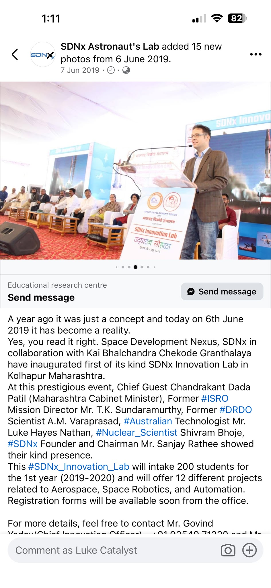
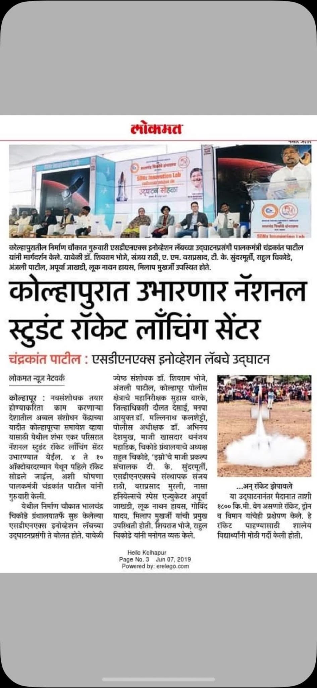
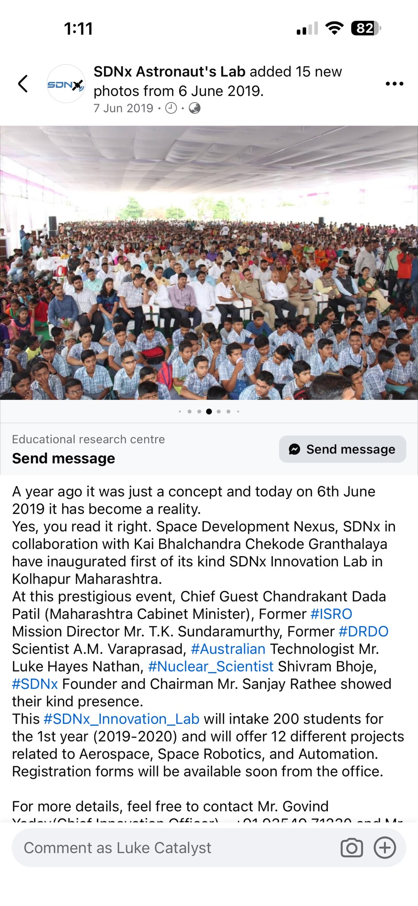

Digital mission card
Model the chosen environment, choose any scientific question and share the assumptions if the team wants others to reproduce or fork it. Run the same simulated dataset through competing algorithms.
Design far away. Learn close to home.
The supplied research sets a design challenge around about 200 focal points for Solar System observation. Students, universities, working engineers and AI copilots create, test and reshape the list while sensor packages, launch ideas and silicon architectures evolve in parallel.
The existing human network
It began as an invitation to think, model, build and learn together.
Luke describes the wider Maharashtra work as reaching several thousand students, politicians and parents. The supplied public SDNx post records the opening of an Innovation Lab in Kolhapur on 6 June 2019, names Luke Hayes Nathan among the invited technologists and announces an initial intake of 200 students across 12 aerospace, space robotics and automation projects.
That specific event record is shown below as user-supplied provenance. Crowd size and wider programme reach have not been independently audited for this site.



Open design challenge
Use the draft catalogue as a launchpad, question it, combine entries, replace them or add your own. Work alone or with others. The prompts below offer a shared language for comparing and connecting projects. Use any that help, in any order, and add your own.
Parallel learning branches
Choose any branch, run several in parallel, invent another, stop, fork or repeat. Every observation reshapes the direction as people acquire information and their needs evolve.
Model the chosen environment, choose any scientific question and share the assumptions if the team wants others to reproduce or fork it. Run the same simulated dataset through competing algorithms.
Connect a real magnetometer, camera, spectrometer, radiation detector or environmental sensor to a small microcontroller (MCU). Calibrate it and log raw data in an open format when comparison matters.
Test heat, cold, vacuum, vibration, radio loss or intermittent power with whatever safe equipment a team controls; add university or specialist facilities when their equipment is useful.
Fly a self-contained experiment with a university CubeSat, hosted payload or other licensed programme. The team owns its inquiry while the host operates the shared command, safety and spectrum interfaces.
A radiation-tolerant MCU handles command, reset and recovery while a higher-performance commercial off-the-shelf (COTS) Arm/FPGA device remains a replaceable experiment, supported by watchdogs, error-correcting code (ECC), current limiting and safe modes.
Student teams model any architecture immediately and send small designs through open-PDK, Tiny Tapeout or MPW routes whenever useful. Accessible fabrication often uses mature nodes. Leading-edge silicon and silicon tested for flight environments explore different physics, costs and mission questions in parallel.
Space-hardened does not mean smallest
Space electronics face total ionising dose, displacement damage and single-event effects. Smaller geometries improve performance and sometimes dose tolerance, while dense, low-voltage logic sometimes becomes more sensitive to single-event upsets.
Radiation-hard-by-design draws on redundancy, error correction, spacing, isolation, watchdogs and recoverable safe modes. Radiation evidence belongs to the actual part and mission environment, rather than an Arm logo or node label.
ESA: radiation-hardness at scaled nodes ↗
NASA/JPL: radiation effects ↗
One architecture to remix
Question, fork, replace or invert any part as mission evidence evolves.
NASA: resilient affordable CubeSat processor concept ↗
Microchip SAMRH71 radiation-hardened Arm MCU ↗
A shared observatory
Alongside Solar System swarm design, teams fuse existing public feeds with small local sensors and digital twins.
The supplied notes already sketch magnetometers, energetic-particle detectors, solar-wind plasma measurements, imaging and spectroscopy; event rules; data provenance; XR views; and delay-tolerant storage. That is a strong curriculum when each claim is classified and every alert has an accountable source.
Ingest solar images, solar-wind conditions, magnetic fields, particle fluxes, ionospheric measurements and local instrument health.
Run baseline forecasts beside student models. Preserve inputs, software version, uncertainty, output and later observation.
Let alternative hypotheses compete on the same data. Pair beautiful visualisations with predictive scoring, uncertainty and an honest record of misses.
Open earthquake challenge
The US Geological Survey reports that no method has yet demonstrated reliable prediction of a major earthquake’s time, location and magnitude. That published baseline is part of the challenge, not the edge of it. Teams explore space-weather, radon, animal-behaviour, ionospheric, geological and yet-unnamed correlations; publish hypotheses, methods, forecasts, misses and falsification records; and let competing models meet the same observations.
Operational early warning is a different signal. It detects rupture after it begins and alerts places before strong shaking arrives. Anyone presenting a service as an official public emergency warning states its operator, evidence, uncertainty, track record and accountability. Experimental signals remain free to be shared as experimental signals.
What the AI is for
Work alone, with AI or with any mix of peers and specialists. Choose companions from this list, elsewhere or nowhere at all.